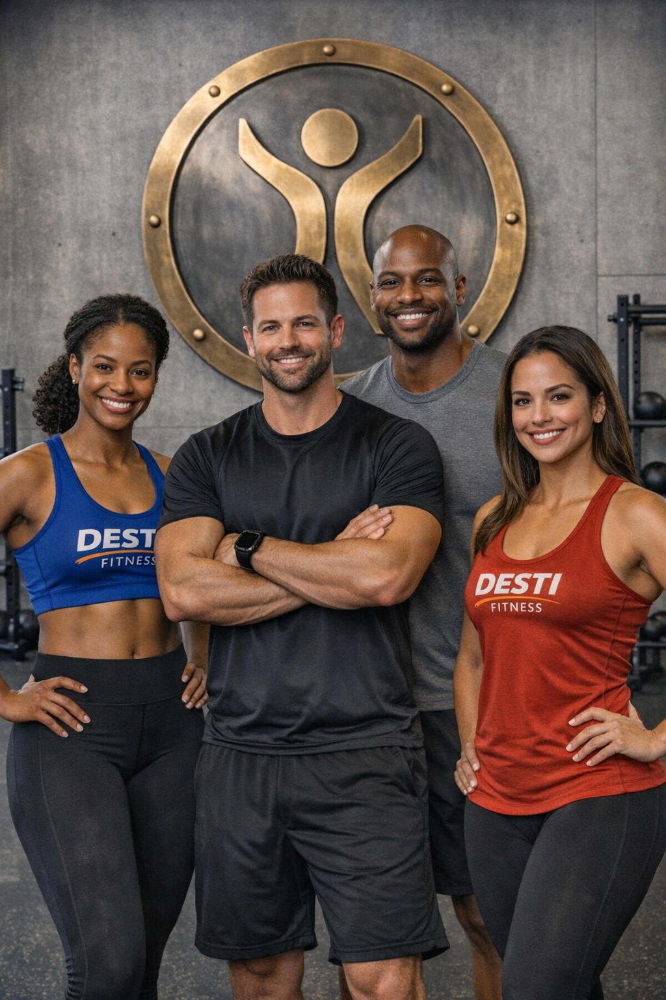

Michael Barber
As a certified Aerobics and Cycling instructor, Michael brings high energy and motivation to every session. He focuses on cardiovascular endurance, stamina building, and making cardio workouts fun and engaging for all fitness levels.
Learn more about our journey, meet our dedicated team, and discover the core values that drive our mission to empower your health and fitness.
DESTI FITNESS & HEALTH was founded by Patria Smith, a passionate fitness professional with 5 years of experience in personal training and nutrition coaching. Patria started this journey after realizing the profound impact that a balanced lifestyle had on her life after being overweight and stressed. This personal transformation ignited a desire to help others find their path to optimal health. Since then, DESTI FITNESS & HEALTH has grown into a community-focused hub, dedicated to providing personalized and holistic wellness solutions.
We are committed to demystifying the world of fitness and nutrition, making it accessible and enjoyable for everyone, regardless of their starting point or goals. Our approach is rooted in science, tailored to individual needs, and delivered with genuine care and support.

Hi, I’m Patria Smith! As the founder of DESTI FITNESS & HEALTH, my mission is to inspire and guide you toward a healthier, more vibrant life. I hold certifications in Group Fitness, NASM Certified Personal Trainer, Precision Nutrition Coach Level 1 and specialize in strength training, functional fitness, Meditation therapy and life coaching for mental health.
My philosophy centers on creating sustainable habits, building inner strength, and fostering a positive relationship with your body. I believe that fitness is a journey, not a destination, and I'm here to equip you with the knowledge, tools, and unwavering support you need to succeed.

Our team of dedicated and certified trainers is here to guide you every step of the way. Each brings a unique set of skills and passion to help you achieve your fitness and health goals.
As a certified Aerobics and Cycling instructor, Michael brings high energy and motivation to every session. He focuses on cardiovascular endurance, stamina building, and making cardio workouts fun and engaging for all fitness levels.
Tina is our nutrition and holistic wellness coach. She helps clients build balanced, sustainable eating habits and empowers them to make informed lifestyle choices for lasting health.

Fatima is our HIIT and functional fitness expert. She designs challenging, high-energy classes that build endurance and athletic strength, keeping you motivated to push your limits.
Joe specializes in strength and conditioning, focusing on weightlifting to build muscle and power. He provides expert coaching on proper form to help clients of all levels achieve major strength gains.
Connect with a trainer and start your personalized journey today.
Schedule a Consultation